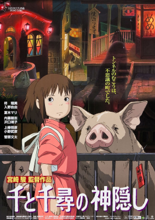
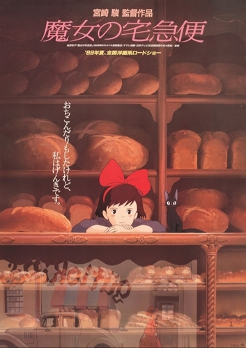

Meu Vizinho Totoro

Duas meninas se mudam com o pai para o interior do Japão, com o objetivo de ficar perto da mãe, que está internada em um hospital. Lá, elas viverão muitas aventuras ao lado de um simpático espírito protetor da floresta chamado Totoro, que vive em uma canforeira gigante.
A Viagem de Chihiro
Chihiro é uma garota de 10 anos que descobre um mundo secreto de espíritos estranhos, criaturas e feitiçaria. Quando seus pais são misteriosamente transformados, ela deve recorrer à coragem que nunca soube que tinha para se libertar e devolver sua família ao mundo exterior.
Castelo Animado

Uma bruxa lança uma terrível maldição sobre a jovem Sophie, transformando-a numa velha de 90 anos. Desesperada, ela embarca numa odisseia na qual acaba parando no castelo animado, onde reside um misterioso feiticeiro chamado Howl que poderá ajudá-la a reverter o feitiço.
Ponyo - Uma Amizade que Veio do Mar
Certa manhã, quando brinca na praia, o pequeno Sosuke encontra um peixe vermelho preso num frasco de doce. Sosuke liberta o peixinho do frasco, a quem dá o nome de Ponyo, e promete protegê-lo para sempre. Mas o pai de Ponyo, um feiticeiro que vive no fundo do mar, força o pequeno peixe a regressar às profundezas. Decidida a tornar-se humana, Ponyo foge para reencontrar Sosuke e espalha acidentalmente uma poção mágica pelo oceano, transformando as suas irmãs em ondas gigantes que ameaçam inundar a aldeia de Sosuke. O amor e a responsabilidade, o oceano e a vida, num mundo fantástico onde a magia também faz parte das coisas naturais do dia-a-dia.
O Menino e a Garça
Um jovem garoto chamado Mahito, ansiando por sua mãe, se aventura em um mundo compartilhado pelos vivos e os mortos. Ali, a morte encontra um fim e a vida encontra um começo. Uma semi-autobriografia fantástica sobre vida, morte e criação, em homenagem à amizade, da mente de Hayao Miyazaki.
Serviço de Entregas da Kiki
Ao completar 13 anos, seguindo a tradição de todas as bruxas, Kiki deve se mudar para uma cidade na qual não haja nenhuma bruxa e passar lá um ano morando sozinha em uma espécie de “estágio”. Após achar uma bela cidade à beira mar, Kiki e seu gatinho Jiji tentam se adaptar à nova vida.